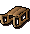
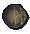
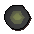
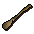

Transportation - Quest Items
General
Some quest items within the game allow you to teleport to a different location. These items are listed below:
![[image]](../../img/main/kbase/items/misc/ectophial.gif) Ectophial |
The ectophial is part of the reward from the Ghosts Ahoy! quest. By emptying it, you'll be teleported to the Ectofuntus just north of Port Phasmatys. To recharge it, simply use the ectophial with the Ectofuntus. This item is very useful due to its uninterrupted one-click teleport ability. |
![[image]](../../img/main/kbase/guides/transportation/lletya_teleport_crystal.gif) Elf teleport crystal |
An elf teleport crystal can be obtained by starting the Mourning's Ends Part I quest. It teleports you to the elven lodge of Lletya, and can be recharged by Eluned for a fee.
Additional teleport crystals can be obtained as drops from elf guards. |
![[image]](../../img/main/kbase/guides/transportation/enchanted_lyre.gif) Enchanted lyre |
You will obtain a lyre during The Fremennik Trials quest. You're able to re-enchant the lyre by offering the Fossegrimen either of the following:
When you play the lyre you will be teleported to Rellekka. When you have used all the teleport charges on your lyre, you'll have to re-enchant it. |
 Sled |
A sled is obtained during the Troll Romance quest. It's used to ride down a mountain, near the Troll Stronghold, to reach an area to pick the trollweiss flower. While sledding you can pick up various spawns of chaos runes and additional sleds along your route. |
![[image]](../../img/main/kbase/items/amulets/camulet.gif) Camulet |
The Camulet is obtained as a reward for the Enakhra's Lament quest. When rubbed, it will teleport you to the temple you uncover in the quest. The Camulet has 4 uses, and when it runs out you will need to use a bucket of camel dung on it to recharge it. |
 Moving-over-distance sphere (Goblin Village) |
Oldak's convenient Goblin Village moving-over-distance sphere is obtained during Another Slice of H.A.M., and can be smashed to teleport you to a random spot in the Goblin Village. Each sphere can be used once. To get another, take molten glass and two law runes to Oldak in Dorgesh-Kaan. |
 Moving-over-distance sphere (Plain of Mud) |
This moving-over-distance sphere is obtained during Land of the Goblins, and can be smashed to teleport you to the caves that now house what was once the Plain of Mud. Each sphere can be used once. To get another, take molten glass and two law runes to Oldak in Dorgesh-Kaan. |
![[image]](../../img/main/kbase/items/quests/bandos_throne_sphere.gif) Moving-over-distance sphere (Bandos's throne room) |
Oldak's latest moving-over-distance sphere is obtained after The Chosen Commander, and can be smashed to teleport you to Bandos's ancient throne room on Yu'biusk. Each sphere can be used once. To get another, take molten glass and two law runes to Oldak in Dorgesh-Kaan. |
![[image]](../../img/main/kbase/items/quests/jennica_s_ring.gif) Jennica's Ring |
Jennica's Ring is obtained during Spirit of Summer, and can be operated while worn in several locations around the Wilderness to access a spirit realm parallel to RuneScape. To recover the ring, search the rubble near where you are first transported to this strange realm. |
 Broomstick |
The broomstick is obtained from Maggie by completing Swept Away, and can be enchanted by members, by taking it to several of Maggie's fellow witches around RuneScape. In addition to enchanting it to provide a direct teleport into Sorceress's Garden, you will receive some bonus Magic experience. If you lose your broomstick, you can get a new one from Maggie. |

More articles in
Transportation
|
|
|
Further Help
Need more help? Come chat with us!
|
|